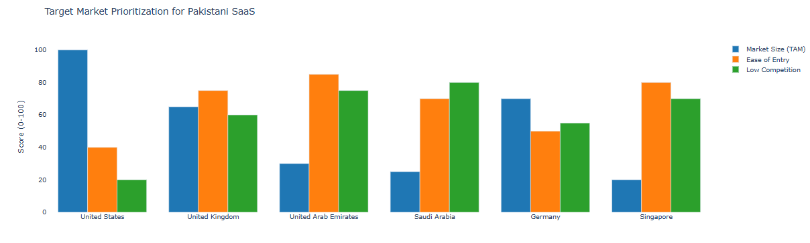
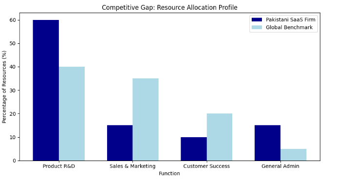

Executive Summary
Pakistan's software as a service sector is at an inflection point. Current exports are estimated at $500 million annually. The strategic objective is to scale this to $2 billion within the next four years.
This case study analyzes the pathway to achieve this aggressive growth through targeted market selection and optimized sales channel design. The recommendations focus on transitioning Pakistani firms from project-based service providers to product-led, scalable SaaS companies.
Situation Overview
Pakistan possesses a strong foundation for SaaS growth. The country has a large, young, technically skilled talent pool graduating from reputable universities. The cost competitiveness of Pakistani developers is a clear advantage in the global market.
However, the current export model is fragmented. It relies heavily on freelance platforms and undifferentiated service offerings. This limits scalability and value capture. The global SaaS market continues to expand, presenting a significant opportunity for Pakistani firms.
Key Findings
- The largest immediate opportunity lies in vertical SaaS solutions targeting specific industries, rather than broad horizontal platforms.
- Pakistani companies underinvest in product marketing and dedicated sales teams, crippling their growth potential.
- The United States, United Kingdom, and Middle East regions offer the most viable entry points based on market size, payment maturity, and cultural alignment.
- A hybrid sales channel model combining inside sales with strategic partnerships is the most effective and capital efficient path to scale.
Market Analysis
The analysis prioritizes markets based on total addressable market, buyer sophistication, and payment gateway accessibility. The United States remains the prime target but is highly competitive. The United Kingdom and UAE offer strong secondary markets with higher ease of entry for initial traction.
Key Insight 1
A dual track market entry strategy is recommended. Companies should target the UAE/UK for initial customer validation and early revenue, while building product capabilities to eventually attack the US market.
Competitive Landscape
Pakistani SaaS companies compete on cost efficiency but lag in sales and marketing execution. The critical gap is in sales and marketing investment. Scaling to $2B requires a fundamental shift in spending patterns.
Key Insight 2
Pakistani SaaS firms need to move from a 70/30 engineering-heavy split to a 50/30/20 balance between R&D, Sales/Marketing, and Customer Success.
Strategic Recommendations
- Establish a National SaaS Go to Market Fund
- Create a public-private fund managed by industry experts
- Co-invest in qualifying Pakistani SaaS companies for marketing and sales
- Expected Outcome: De-risk market expansion for 50-100 SaaS companies
- Launch Vertical Specific SaaS Incubators
- Partner with global industry leaders in logistics, retail, and healthcare
- Establish focused incubators in Karachi, Lahore, and Islamabad
- Expected Outcome: Generate 20-30 investable vertical SaaS startups per year
- Create a Tiered Market Entry Program
- Structured program for companies at different maturity levels
- Provide market intelligence, mentorship, and networking opportunities
- Expected Outcome: Systematic market penetration in target regions
Potential Impact
- Export Revenue: Achieve the $2 billion annual export target within 48 months
- Employment: Create over 100,000 new high value jobs in product development, marketing, and sales
- Company Growth: Foster the creation of 10+ Pakistani SaaS companies with valuations exceeding $100 million
- Ecosystem Development: Establish Pakistan as a recognized SaaS hub in the region
Implementation Roadmap
30-60-90 Day Plan
- First 30 Days: Form cross-functional task force with representatives from P@SHA, Ministry of IT, and private VC firms
- Days 31-60: Secure anchor investors for the Go to Market Fund
- Days 61-90: Officially announce the Fund and open applications
Quick Wins vs. Long-term Initiatives
- Quick Win (3-6 months): Launch centralized "Pakistan SaaS" directory and lead sharing platform
- Long-term Initiative (12-24 months): Establish permanent Pakistani SaaS trade mission in key target markets
Key Insight 3
The sector's high technical capability is not the bottleneck. The path to $2B is primarily a commercial and product management challenge, not a technical one.
Success Metrics
- Leading Indicator: Annual growth rate of SaaS exports (Target: >35% YoY)
- Lagging Indicator: Total SaaS export revenue (Target: $2B by 2028)
- Activity Metric: Number of Pakistani SaaS companies with dedicated inside sales teams (Target: 100+ companies within 2 years)